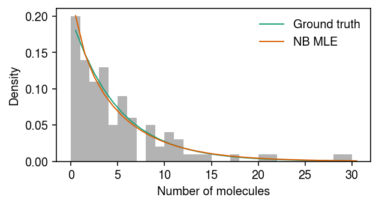
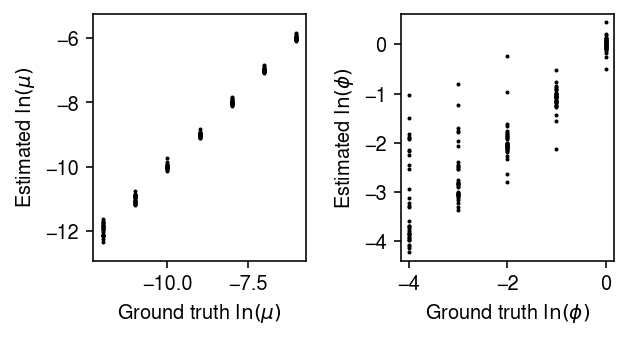
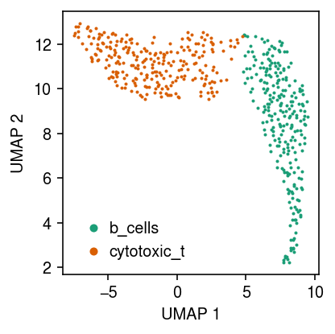
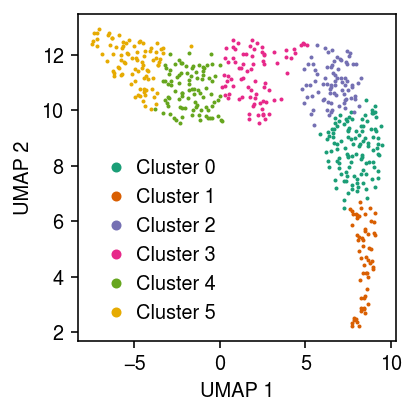
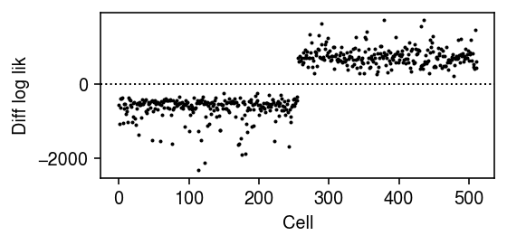
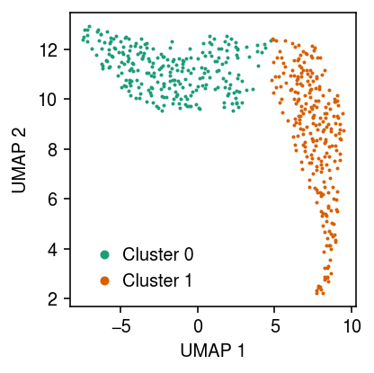
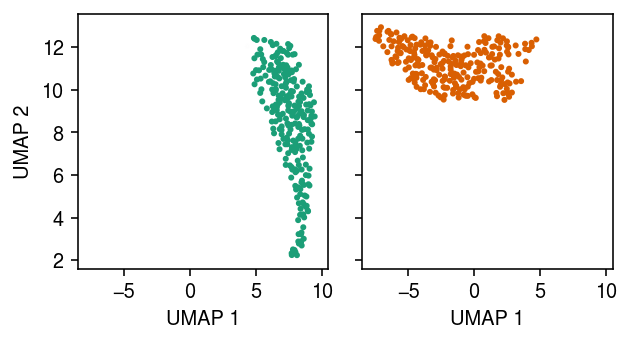
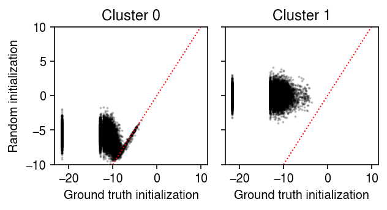

Model-based clustering of scRNA-seq data
Table of Contents
Introduction
Two major strategies for clustering scRNA-seq data are:
- Building a \(k\)-nearest neighbor graph on the data, and applying a community detection algorithm (e.g., Blondel et al. 2008, Traag et al. 2018)
- Fitting a topic model to the data (e.g., Dey et al. 2017, Gonzáles-Blas et al. 2019)
The main disadvantage of strategy (1) is that, as commonly applied to transformed counts, it does not separate measurement error and biological variation of interest. The main disadvantage of strategy (2) is that it does not account for transcriptional noise (Raj 2008). Here, we develop a simple model-based clustering algorithm which addresses both of these issues.
Setup
import anndata import mpebpm.gam_mix import mpebpm.sgd import numpy as np import pandas as pd import scanpy as sc import scipy.optimize as so import scipy.special as sp import scipy.stats as st import scmodes import time import torch import torch.utils.data as td
%matplotlib inline %config InlineBackend.figure_formats = set(['retina'])
import matplotlib import matplotlib.pyplot as plt plt.rcParams['figure.facecolor'] = 'w' plt.rcParams['font.family'] = 'Nimbus Sans'
Method
We assume \( \DeclareMathOperator\Gam{Gamma} \DeclareMathOperator\Mult{Multinomial} \DeclareMathOperator\N{\mathcal{N}} \DeclareMathOperator\Pois{Poisson} \DeclareMathOperator\diag{diag} \newcommand\xiplus{x_{i+}} \newcommand\mi{\mathbf{I}} \newcommand\vu{\mathbf{u}} \newcommand\vx{\mathbf{x}} \newcommand\vz{\mathbf{z}} \newcommand\vlambda{\boldsymbol{\lambda}} \newcommand\vmu{\boldsymbol{\mu}} \newcommand\vphi{\boldsymbol{\phi}} \newcommand\vpi{\boldsymbol{\pi}} \)
\begin{align} x_{ij} \mid \xiplus, \lambda_{ij} &\sim \Pois(\xiplus \lambda_{ij})\\ \lambda_{ij} \mid \vpi_i, \vmu_k, \vphi_k &\sim \sum_{k=1}^{K} \pi_{ik} \Gam(\phi_{kj}^{-1}, \phi_{kj}^{-1}\mu_{kj}^{-1}), \end{align}where
- \(x_{ij}\) denotes the number of molecules of gene \(j\) observed in cell \(i\)
- \(\xiplus \triangleq \sum_j x_{ij}\) denotes the total number of molecules observed in cell \(i\)
- \(\vpi_i\) denotes cluster assignment probabilities for cell \(i\)
- \(\vmu_k\) denotes the cluster “centroid” for cluster \(k\), and \(\vphi_k\) describes stochastic perturbations within each cluster
The intuition behind this model is that each cluster \(k\) is defined by a collection of independent Gamma distributions (parameterized by shape and rate), one per gene \(j\), which describe the distribution of true gene expression for each gene in each cluster (Sarkar and Stephens 2020). In this parameterization, each Gamma distribution has mean \(\mu_{kj}\) and variance \(\mu_{kj}^2\phi_{kj}\). Under this model, the marginal likelihood is a mixture of negative binomials
\begin{equation} p(x_{ij} \mid \xiplus, \vpi_i, \vmu_k, \vphi_k) = \sum_{k=1}^{K} \pi_{ik} \frac{\Gamma(x_{ij} + 1 / \phi_{kj})}{\Gamma(1 / \phi_{kj})\Gamma(x_{ij} + 1)}\left(\frac{\xiplus\mu_{kj}\phi_{kj}}{1 + \xiplus\mu_{kj}\phi_{kj}}\right)^{x_{ij}} \left(\frac{1}{1 + \xiplus\mu_{kj}\phi_{kj}}\right)^{1/\phi_{kj}}. \end{equation}We can estimate \(\vpi, \vmu, \vphi\) by maximizing the likelihood using an EM algorithm. Letting \(z_{ik} \in \{0, 1\}\) indicate whether cell \(i\) is assigned to cluster \(k\), the exact posterior
\begin{align} q(z_{i1}, \ldots, z_{iK}) &\triangleq p(z_{ik} \mid \cdot) = \Mult(1, \alpha_{i1}, \ldots, \alpha_{iK})\\ \alpha_{ik} &\propto \sum_j \frac{\Gamma(x_{ij} + 1 / \phi_{kj})}{\Gamma(1 / \phi_{kj})\Gamma(x_{ij} + 1)}\left(\frac{\xiplus\mu_{kj}\phi_{kj}}{1 + \xiplus\mu_{kj}\phi_{kj}}\right)^{x_{ij}} \left(\frac{1}{1 + \xiplus\mu_{kj}\phi_{kj}}\right)^{1/\phi_{kj}}. \end{align}The expected log joint with respect to \(q\)
\begin{multline} E_q[\ln p(x_{ij}, z_{ik} \mid \xiplus, \vpi_i, \vmu_k, \vphi_k)] = \sum_k E_q[z_{ik}] \left[x_{ij} \ln\left(\frac{\xiplus\mu_{kj}\phi_{kj}}{1 + \xiplus\mu_{kj}\phi_{kj}}\right)\right.\\ \left. - \phi_{kj}^{-1} \ln(1 + \xiplus\mu_{kj}\phi_{kj}) + \ln\Gamma(x_{ij} + 1 / \phi_{kj}) - \ln\Gamma(1 / \phi_{kj}) - \ln\Gamma(x_{ij} + 1)\right]. \end{multline}In the E step, the necessary expectations are analytic. In the M step, we can improve the likelihood by (batch) gradient descent, or by mixed analytic and Newton-Raphson updates (Karlis 2005). Alternatively, we can write the NB distribution as a Poisson sum of log-series distributed random variables (Quenouille 1949), which admits an EM algorithm with fully analytic M step (Adamidis 1999, Huang et al. 2019). Another alternative, which is amenable to stochastic gradient descent and online learning, is to use the fact that EM can be viewed as maximizing the evidence lower bound (Neal and Hinton 1998)
\begin{equation} \max_{q, \theta} \ln p(x \mid \theta) - \mathcal{KL}(q(z) \Vert p(z \mid x, \theta)) = \max_{q, \theta} E_q[\ln p(x \mid z, \theta)] - \mathcal{KL}(q(z) \Vert p(z \mid \theta)). \end{equation}Exact EM corresponds to (fully) alternately optimizing \(q\) and \(\theta\); however, we can instead amortize inference (Gershman and Goodman 2014, Kingma and Welling 2014, Rezende et al. 2014), learning a neural network \(f_z\) mapping \(\vx_i \rightarrow \vz_i\)
\begin{align} p(z_{i1}, \ldots, z_{iK}) &= \Mult(1, \vpi)\\ q(z_{i1}, \ldots, z_{iK} \mid \vx_i) &= \Mult(1, f_z(\vx_i)). \end{align}Results
EM for Poisson-Gamma compound distribution
Karlis 2005 gives an EM algorithm for fitting a Gamma mixture of Poissons. The key idea is that, due to Poisson-Gamma conjugacy, the exact posterior is available, as are the necessary posterior moments. The main disadvantage of this approach is that it requires (one-dimensional) numerical optimization in the M step.
\begin{align} x_i \mid \xiplus, \lambda_i &\sim \Pois(\xiplus \lambda_i)\\ \lambda_i \mid \alpha, \beta &\sim \Gam(\alpha, \beta)\\ \lambda_i \mid x_i, \xiplus, \alpha, \beta &\sim q \triangleq \Gam(x_i + \alpha, \xiplus + \beta)\\ E_q[\lambda_i] &= \frac{x_i + \alpha}{\xiplus + \beta}\\ E_q[\ln \lambda_i] &= \psi(x + \alpha) - \log(\xiplus + \beta)\\ E_q[\ln p(x_i, \lambda_i \mid \xiplus, \alpha, \beta)] &= \ell_i \triangleq x_i E_q[\ln \lambda_i] - E_q[\lambda_i] - \ln\Gamma(x_i + 1) + \alpha \ln\beta - \ln\Gamma(\alpha) + (\alpha - 1) E_q[\lambda_i] - \beta E_q[\lambda_i]\\ \ell &= \sum_i \ell_i\\ \frac{\partial\ell}{\partial\beta} &= \sum_i \frac{\alpha}{\beta} - E_q[\lambda_i] = 0\\ \beta &= \frac{\bar{\lambda}}{\alpha}\\ \frac{\partial\ell}{\partial\alpha} &= \sum_i \ln \beta - \psi(\alpha) + E_q[\ln x_i]\\ \frac{\partial^2\ell}{\partial\alpha^2} &= -n \psi^{(1)}(\alpha) \end{align}where \(\psi\) denotes the digamma function and \(\psi^{(1)}\) denotes the trigamma function. The algorithm uses a partial M step (single Newton-Raphson update) for \(\alpha\).
def ebpm_gamma_em(x, s, max_iters=100, tol=1e-3): """Return fitted parameters assuming g is a Gamma distribution Returns log mu and -log phi x - array-like [n,] s - array-like [n,] """ n = x.shape[0] assert x.shape == (n,) assert x.shape == s.shape # a = 1 / phi; b = 1 / (mu phi) a = 1 # Initialize at the Poisson MLE b = s.sum() / x.sum() obj = [] obj.append(st.nbinom(n=a, p=1 / (1 + s / b)).logpmf(x).sum()) for i in range(max_iters): # E[lam | x] pm = (x + a) / (s + b) assert (pm > 0).all() # E[ln lam | x] plm = sp.digamma(x + a) - np.log(s + b) b = a / pm.mean() # Important: this appears to be incorrect in Karlis 2005 a += (np.log(b) - sp.digamma(a) + plm.mean()) / sp.polygamma(1, a) assert a > 0 assert b > 0 obj.append(st.nbinom(n=a, p=1 / (1 + s / b)).logpmf(x).sum()) if obj[-1] < obj[-2]: raise RuntimeError('llik decreased') elif obj[-1] - obj[-2] < tol: log_inv_disp = np.log(a) log_mean = -np.log(b) + np.log(a) return log_mean, log_inv_disp, obj else: raise RuntimeError('failed to converge in max_iters')
Try EM for a simple example.
rng = np.random.default_rng(1) n = 100 log_mean = -10 log_inv_disp = 0 s = np.repeat(1e5, n) lam = rng.gamma(shape=np.exp(log_inv_disp), scale=np.exp(log_mean - log_inv_disp), size=n) x = rng.poisson(s * lam)
log_mu, neg_log_phi, trace = ebpm_gamma_em(x, s)
Plot the simulated data, the ground truth marginal distribution on counts, and the NB MLE.
cm = plt.get_cmap('Dark2') plt.clf() plt.gcf().set_size_inches(4.5, 2.5) grid = np.arange(x.max() + 1) plt.hist(x, bins=grid, color='0.7', density=True) plt.plot(grid + .5, st.nbinom(n=np.exp(-log_inv_disp), p=1 / (1 + s[0] * np.exp(log_mean - log_inv_disp))).pmf(grid), lw=1, color=cm(0), label='Ground truth') plt.plot(grid + .5, st.nbinom(n=np.exp(neg_log_phi), p=1 / (1 + s[0] * np.exp(log_mu - neg_log_phi))).pmf(grid), lw=1, color=cm(1), label='NB MLE') plt.legend(frameon=False) plt.xlabel('Number of molecules') plt.ylabel('Density') plt.tight_layout()

Try a more extensive evaluation of the method.
n = 100 s = np.repeat(1e5, n) result = dict() for trial in range(5): for log_mean in np.linspace(-12, -6, 7): for log_inv_disp in np.linspace(0, 4, 5): rng = np.random.default_rng(trial) lam = rng.gamma(shape=np.exp(log_inv_disp), scale=np.exp(log_mean - log_inv_disp), size=n) x = rng.poisson(s * lam) start = time.time() log_mean_hat, log_inv_disp_hat, trace = ebpm_gamma_em(x, s, max_iters=1000) elapsed = time.time() - start result[(log_mean, log_inv_disp, trial)] = pd.Series([log_mean_hat, log_inv_disp_hat, len(trace), elapsed]) result = (pd.DataFrame.from_dict(result, orient='index') .reset_index() .rename({f'level_{i}': k for i, k in enumerate(['log_mean', 'log_inv_disp', 'trial'])}, axis=1) .rename({i: k for i, k in enumerate(['log_mean_hat', 'log_inv_disp_hat', 'num_iters', 'elapsed'])}, axis=1))
Plot the estimates against the ground truth values.
plt.clf() fig, ax = plt.subplots(1, 2) fig.set_size_inches(4.5, 2.5) for a in ax: a.set_aspect('equal', adjustable='datalim') ax[0].scatter(result['log_mean'], result['log_mean_hat'], c='k', s=1) ax[0].set_xlabel('Ground truth $\ln(\mu)$') ax[0].set_ylabel('Estimated $\ln(\mu)$') ax[1].scatter(-result['log_inv_disp'], -result['log_inv_disp_hat'], c='k', s=1) ax[1].set_xlabel('Ground truth $\ln(\phi)$') ax[1].set_ylabel('Estimated $\ln(\phi)$') fig.tight_layout()

Estimate the average time (seconds) taken to fit each trial.
result['elapsed'].mean(), result['elapsed'].std()
(0.18343861034938266, 0.18248113994496618)
EM for Poisson-Gamma mixture
We can use numerical methods to perform the M step.
def _nb_mix_llik(theta, x, s): """Return log likelihood matrix theta - array-like [2, k] x - array-like [n, 1] s - array-like [n, 1] """ # Important: so.minimize flattens theta theta = theta.reshape(2, -1) mean = np.exp(theta[0]).reshape(1, -1) # Important: this can blow up inv_disp = np.exp(np.clip(theta[1], -15, 15)).reshape(1, -1) # [n, k] L = st.nbinom(n=inv_disp, p=1 / (1 + s * mean / inv_disp)).logpmf(x.reshape(-1, 1)) assert L.shape == (x.shape[0], theta.shape[1]) assert np.isfinite(L).all() return L def _nb_mix_obj(theta, x, z, s): """Return negative log likelihood theta - array-like [2, k] x - array-like [n, 1] z - array-like [n, k] s - array-like [n, 1] """ L = _nb_mix_llik(theta, x, s) m = L.max(axis=1, keepdims=True) return -(np.log(z) + L).mean() def ebpm_gamma_mix(x, s, k, max_iters=100, tol=1e-3, verbose=False, seed=1): assert x.ndim == 2 n, p = x.shape assert s.shape == (n, 1) assert k > 1 rng = np.random.default_rng(seed) log_mean = rng.normal(size=(p, k)) log_inv_disp = rng.normal(size=(p, k)) z = np.ones((n, k)) / k loss = np.array([_nb_mix_obj(np.vstack([log_mean[j], log_inv_disp[j]]), x[:,j], z, s) for j in range(p)]).sum() if verbose: print(f'epoch 0: {loss:.4g}') for t in range(max_iters): for j in range(p): opt = so.minimize(_nb_mix_obj, x0=np.vstack([log_mean[j], log_inv_disp[j]]), args=(x[:,j], z, s), method='nelder-mead', options={'maxiter':1000}) if not opt.success: raise RuntimeError(f'M step failed to converge: {opt.message}') log_mean[j] = opt.x[0] log_inv_disp[j] = opt.x[1] L = np.array([_nb_mix_llik(np.vstack(log_mean[j], log_inv_disp[j]), x[:,j], s) for j in range(p)]).sum(axis=0) z = sp.softmax(L, axis=1) update = np.array([_nb_mix_obj(np.vstack(log_mean[j], log_inv_disp[j]), x[:,j], z, s) for j in range(p)]).sum() if update > loss: raise RuntimeError('objective increased') elif loss - update < tol: return z, log_mean, log_inv_disp else: if verbose: print(f'epoch {t + 1}: {loss:.4g}') loss = update raise RuntimeError('failed to converge in max_iters')
EM for Poisson-Log compound distribution
The NB distribution can be derived as a Poisson-distributed sum of Log-distributed random variables (Quenouille 1949)
\begin{align} x_i \mid y_1, \ldots, y_{m_i}, m_i &= \sum_{t=1}^{m_i} y_t\\ m_i &\sim \Pois(-n \ln(1 - p))\\ p(y_t \mid p) &= -\frac{p^{y_t}}{y_t \ln(1 - p)}, \quad t = 1, \ldots\\ p(x_i \mid n, p) &\propto p^n (1 - p)^{x_i} \end{align}To connect this parameterization to our parameterization, we have \(n = 1/\phi\) and \(p = 1 / (1 + \xiplus\mu\phi)\). Adamidis 1999 uses this fact to derive a new auxiliary variable representation of the NB distribution
\begin{equation} p(y_t, z_t \mid p) = \frac{(1 - p)^{z_t} p^{y_t - 1}}{y_t}, z_t \in (0, 1) \end{equation}Letting \(q \triangleq p(m_i, y_1, \ldots, z_1, \ldots \mid x_i, n, p)\),
\begin{align} E_q[\ln p(x_i \mid m_i, y_1, \ldots, z_1, \ldots, n, p)] &= E_q[m_i] \ln(-n \ln(1 - p)) - n \ln(1 - p) + E_q[\ln\Gamma(m_i + 1)]\\ &\quad + E_q[\textstyle\sum_{t=1}^{m_i} z_t] \ln(1 - p) + (\textstyle\sum_{t=1}^{m_i} E_q[y_t] - E_q[m_i]) \ln p + \mathrm{const}\\ &= E_q[m_i] \ln(-n \ln(1 - p)) - n \ln(1 - p) + E_q[\ln\Gamma(m_i + 1)]\\ E_q[\textstyle\sum_t z_t] &= E_q[m_i] E_q[z_t]\\ E_q[m_i] &= \end{align}def pois_log_series_em(x, s, max_iters=100, tol=1e-3): n = x.shape[0] assert x.shape == (n,) assert x.shape == s.shape z = .5 m = .5 * x p = (x - m).sum() / (x + m * z - m) n = m.mean() obj = [st.nbinom(n=n, p=p).logpmf(x).sum()] for i in range(max_iters): z = -((1 - p) / p - 1 / np.log(1 - p)) assert 0 < z < 1 alpha = n / np.log(1 - p) assert alpha > 0 m = alpha * (sp.digamma(alpha + x) - sp.digamma(alpha)) assert m > 0 p = (x - m).sum() / (x + m * z - m) assert p > 0 n = m.mean() assert n > 0 obj.append(st.nbinom(n=n, p=p).logpmf(x).sum()) if obj[-1] < obj[-2]: raise RuntimeError('llik decreased') elif obj[-1] - obj[-2] < tol: log_inv_disp = -np.log(n) log_mean = np.log(1 / p - 1) - np.log(s) - np.log(n) return log_mean, log_inv_disp, obj else: raise RuntimeError('failed to converge in max_iters')
Try EM for a simple example.
rng = np.random.default_rng(1) n = 100 log_mean = -10 log_inv_disp = 0 s = np.repeat(1e5, n) lam = rng.gamma(shape=np.exp(log_inv_disp), scale=np.exp(log_mean - log_inv_disp), size=n) x = rng.poisson(s * lam)
log_mu, neg_log_phi, trace = ebpm_gamma_em(x, s)
Plot the simulated data, the ground truth marginal distribution on counts, and the NB MLE.
cm = plt.get_cmap('Dark2') plt.clf() plt.gcf().set_size_inches(4.5, 2.5) grid = np.arange(x.max() + 1) plt.hist(x, bins=grid, color='0.7', density=True) plt.plot(grid + .5, st.nbinom(n=np.exp(-log_inv_disp), p=1 / (1 + s[0] * np.exp(log_mean - log_inv_disp))).pmf(grid), lw=1, color=cm(0), label='Ground truth') plt.plot(grid + .5, st.nbinom(n=np.exp(neg_log_phi), p=1 / (1 + s[0] * np.exp(log_mu - neg_log_phi))).pmf(grid), lw=1, color=cm(1), label='NB MLE') plt.legend(frameon=False) plt.xlabel('Number of molecules') plt.ylabel('Density') plt.tight_layout()
Real data example
Read sorted immune cell scRNA-seq data (Zheng et al. 2017).
dat = anndata.read_h5ad('/scratch/midway2/aksarkar/ideas/zheng-10-way.h5ad')
Get 256 B cells and 256 cytotoxic T cells.
b_cells = dat[dat.obs['cell_type'] == 'b_cells'] sc.pp.subsample(b_cells, n_obs=256, random_state=0) t_cells = dat[dat.obs['cell_type'] == 'cytotoxic_t'] sc.pp.subsample(t_cells, n_obs=256) temp = b_cells.concatenate(t_cells) sc.pp.filter_genes(temp, min_counts=1)
Plot a UMAP embedding of the data, coloring points by the ground truth labels.
sc.pp.pca(temp) sc.pp.neighbors(temp) sc.tl.umap(temp)
cm = plt.get_cmap('Dark2') plt.clf() plt.gcf().set_size_inches(3, 3) for i, c in enumerate(temp.obs['cell_type'].unique()): plt.plot(*temp[temp.obs['cell_type'] == c].obsm["X_umap"].T, c=cm(i), marker='.', ms=2, lw=0, label=f'{c}') plt.legend(frameon=False, markerscale=4, handletextpad=0) plt.xlabel('UMAP 1') plt.ylabel('UMAP 2') plt.tight_layout()

Leiden algorithm
Apply the Leiden algorithm (Traag et al. 2018) to the data (<1 s).
sc.tl.leiden(temp, random_state=0)
cm = plt.get_cmap('Dark2') plt.clf() plt.gcf().set_size_inches(3, 3) for i, c in enumerate(temp.obs['leiden'].unique()): plt.plot(*temp[temp.obs['leiden'] == c].obsm["X_umap"].T, c=cm(i), marker='.', ms=2, lw=0, label=f'Cluster {i}') plt.legend(frameon=False, markerscale=4, handletextpad=0) plt.xlabel('UMAP 1') plt.ylabel('UMAP 2') plt.tight_layout()

MPEBPM
First, start from the ground truth \(z\) (labels), and estimate the Gamma expression models.
fit0 = mpebpm.sgd.ebpm_gamma( temp.X, onehot=pd.get_dummies(temp.obs['cell_type']).values, batch_size=32, num_epochs=320, shuffle=True, log_dir='runs/nbmix/pretrain/')
y = pd.get_dummies(temp.obs['cell_type']).values s = temp.X.sum(axis=1) nb_llik = y.T @ st.nbinom(n=np.exp(y @ fit0[1]), p=1 / (1 + s.A * (y @ np.exp(fit0[0] - fit0[1])))).logpmf(temp.X.A)
For comparison, estimate a point mass expression model for each gene, for each cluster.
y = pd.get_dummies(temp.obs['cell_type']).values s = temp.X.sum(axis=1) fit_pois = (y.T @ temp.X) / (y.T @ s) pois_llik = y.T @ st.poisson(mu=s.A * (y @ fit_pois).A).logpmf(temp.X.A)
For each gene, for each cluster, plot the log likelihood under the point mass and Gamma expression models.
plt.clf() fig, ax = plt.subplots(1, 2, sharey=True) fig.set_size_inches(4.5, 2.5) lim = [-1500, 0] for i, (a, t) in enumerate(zip(ax, ['B cell', 'Cytotoxic T'])): a.scatter(pois_llik[i], nb_llik[i], c='k', s=1, alpha=0.2) a.plot(lim, lim, c='r', lw=1, ls=':') a.set_xlim(lim) a.set_ylim(lim) a.set_title(t) a.set_xlabel('Poisson log lik') ax[0].set_ylabel('NB log lik') fig.tight_layout()

Look at the differences in the estimated mean parameter for each gene, to see how many genes are informative about the labels.
query = np.sort(np.diff(fit0[0], axis=0).ravel()) plt.clf() plt.gcf().set_size_inches(4, 2) plt.plot(query, lw=1, c='k') plt.axhline(y=0, lw=1, ls=':', c='k') plt.xlabel('Gene') plt.ylabel(r'Diff $\ln(\mu_j)$') plt.tight_layout()

Estimate the cluster weights.
L = mpebpm.gam_mix._nb_mix_llik( x=torch.tensor(temp.X.A, dtype=torch.float), s=torch.tensor(temp.X.sum(axis=1), dtype=torch.float), log_mean=torch.tensor(fit0[0], dtype=torch.float), log_inv_disp=torch.tensor(fit0[1], dtype=torch.float)) zhat = torch.nn.functional.softmax(L, dim=1)
Plot the log likelihood difference between the two components for each data point.
plt.clf() plt.gcf().set_size_inches(4, 2) plt.plot(np.diff(L).ravel(), lw=0, marker='.', c='k', ms=2) plt.axhline(y=0, lw=1, ls=':', c='k') plt.xlabel('Cell') plt.ylabel('Diff log lik') plt.tight_layout()

Compute the cross entropy between the estimated \(\hat{z}\) and the ground truth.
torch.nn.functional.binary_cross_entropy( zhat, torch.tensor(pd.get_dummies(temp.obs['cell_type']).values, dtype=torch.float))
tensor(0.)
Compute a weighted log likelihood.
w = torch.rand([512, 2]) w /= w.sum(dim=1).unsqueeze(-1) m, _ = L.max(dim=1, keepdim=True) (m + torch.log(w * torch.exp(L - m) + 1e-8)).mean()
tensor(-1872.5645)
Try fitting the model from a random initialization (49 s).
import imp; imp.reload(mpebpm.gam_mix) torch.manual_seed(0) fit = mpebpm.gam_mix.ebpm_gam_mix_em( x=temp.X.A, s=temp.X.sum(axis=1), y=torch.tensor(pd.get_dummies(temp.obs['cell_type']).values, dtype=torch.float).cuda(), k=2, num_epochs=400, max_em_iters=10, log_dir='runs/nbmix/mpebpm-random-init0-iter10')
Compute the cross entropy between the estimated \(\hat{z}\) and the ground truth.
torch.nn.functional.binary_cross_entropy( torch.tensor(fit[-1], dtype=torch.float), torch.tensor(pd.get_dummies(temp.obs['cell_type']).values, dtype=torch.float))
tensor(0.)
Plot the UMAP, colored by the fitted clusters.
cm = plt.get_cmap('Dark2') plt.clf() plt.gcf().set_size_inches(3, 3) for i in range(fit[-1].shape[1]): plt.plot(*temp[fit[-1][:,i].astype(bool)].obsm["X_umap"].T, c=cm(i), marker='.', ms=2, lw=0, label=f'Cluster {i}') plt.legend(frameon=False, markerscale=4, handletextpad=0) plt.xlabel('UMAP 1') plt.ylabel('UMAP 2') plt.tight_layout()

Amortized inference
Fit the amortized inference model, initializing \(\vmu_k, \vphi_k\) from the MLE starting from the ground-truth labels.
query = torch.tensor(temp.X.A) s = torch.tensor(temp.X.sum(axis=1)) fit = mpebpm.gam_mix.EBPMGammaMix( p=temp.shape[1], k=2, log_mean=fit0[0], log_inv_disp=fit0[1])
Look at the initial loss.
(
mpebpm.gam_mix._nb_mix_loss(
fit.encoder.forward(query),
query,
s,
fit.log_mean,
fit.log_inv_disp),
mpebpm.gam_mix._nb_mix_loss(
torch.tensor(pd.get_dummies(temp.obs['cell_type']).values),
query,
s,
fit.log_mean,
fit.log_inv_disp)
)
(tensor(1927253.3750, grad_fn=<NegBackward>), tensor(1926631.7500, grad_fn=<NegBackward>))
Look at the gradients with respect to the encoder network weights.
temp_loss = mpebpm.gam_mix._nb_mix_loss( fit.encoder.forward(query), query, torch.tensor(temp.X.sum(axis=1)), fit.log_mean, fit.log_inv_disp) temp_loss.retain_grad() temp_loss.backward() torch.norm(fit.encoder[0].weight.grad)
tensor(31154.1895)
Perform amortized inference, initializing \(\vmu_k, \vphi_k\) from the MLE starting from the ground-truth labels.
torch.manual_seed(1) fit1 = mpebpm.gam_mix.EBPMGammaMix( p=temp.shape[1], k=2, log_mean=fit0[0], log_inv_disp=fit0[1]).fit( x=temp.X.A, s=temp.X.sum(axis=1), y=pd.get_dummies(temp.obs['cell_type']).values, lr=1e-3, batch_size=64, shuffle=True, num_pretrain=80, num_epochs=80, log_dir='runs/nbmix/ai-inittruth-epoch80')
Compute the cross entropy loss over the posterior mean cluster assignments.
zhat = fit1.forward(query.cuda()).detach().cpu().numpy() torch.nn.functional.binary_cross_entropy( torch.tensor(zhat, dtype=torch.float), torch.tensor(pd.get_dummies(temp.obs['cell_type']).values, dtype=torch.float))
tensor(0.2482)
Plot the approximate posterior over cluster assignments for each point.
cm = plt.get_cmap('Dark2') plt.clf() fig, ax = plt.subplots(1, 2, sharex=True, sharey=True) fig.set_size_inches(4.5, 2.5) for i, a in enumerate(ax): a.scatter(*temp.obsm["X_umap"].T, s=4, c=np.hstack((np.tile(np.array(cm(i)[:3]), zhat.shape[0]).reshape(-1, 3), zhat[:,i].reshape(-1, 1)))) a.set_xlabel('UMAP 1') ax[0].set_ylabel('UMAP 2') fig.tight_layout()

Threshold cluster assignments, and compute the cross entropy loss.
zhat_thresh = pd.get_dummies(np.argmax(zhat, axis=1)) torch.nn.functional.binary_cross_entropy( torch.tensor(zhat_thresh.values, dtype=torch.float), torch.tensor(pd.get_dummies(temp.obs['cell_type']).values, dtype=torch.float))
tensor(0.)
Now, fit the model starting from a random initialization.
import imp; imp.reload(mpebpm.gam_mix) torch.manual_seed(1) fit2 = mpebpm.gam_mix.EBPMGammaMix( p=temp.shape[1], k=2).fit( x=temp.X.A, s=temp.X.sum(axis=1), y=pd.get_dummies(temp.obs['cell_type']).values, lr=1e-2, batch_size=64, shuffle=True, num_pretrain=1, num_epochs=120, log_dir='runs/nbmix/ai-init1-pretrain1')
Compare the estimated \(\ln\mu\) from the clustering model to the estimates using the ground truth labels.
lim = [-10, 10] plt.clf() fig, ax = plt.subplots(1, 2, sharey=True) fig.set_size_inches(4.5, 2.5) for i, a in enumerate(ax): a.scatter(fit1.log_mean[i].detach().cpu().numpy(), fit2.log_mean[i].detach().cpu().numpy(), s=1, c='k', alpha=0.2) a.plot(lim, lim, c='r', lw=1, ls=':') a.set_title(f'Cluster {i}') a.set_ylim(lim) a.set_xlabel('Ground truth initialization') ax[0].set_ylabel('Random initialization') fig.tight_layout()
